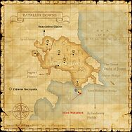

Description
Batallia Downs is an outdoor area in Norvallen.
Map

Involved in Quests / Missions
| Quest / Mission | Type | Starter | Location |
|---|---|---|---|
| A Chocobo's Tale | General | Nevela | Upper Jeuno (pos=G-7) |
| An Explorer's Footsteps | Map | Abelard | Selbina (pos=G-9) |
| Chasing Quotas | AF (DRG) | Ceraulian | Port San d'Oria (pos=I-10) |
| The Setting Sun | General | Vamorcote | Northern San d'Oria (pos=F-5) |
NPCs
- Acacia
- Atmacite Refiner
- Burrow Researcher
- Sokrov
- Syrillia
- Voidwatch Officer
- Wotark
Notorious Monsters
| Name | Level | Drops | Steal | Family | Spawns | Notes |
|---|---|---|---|---|---|---|
| Tottering Toby | 27-28 | Stumbling Sandals Treant Bulb | — |  SaplingsImage source SaplingsImage source | — | Lottery spawn from Stalking Sapling; L, H |
| Weeping Willow | 45 | — | — |  TreantsImage source TreantsImage source | — | A, S |
| Ahtu | 51-52 | Engraved Key Dryad Root Revival Tree Root Mistletoe | — | TreantsImage source | — | Every 2-4 hrs; A, S |
| Lumber Jack | 55 | Beetle Blood Beetle Jaw Beetle Shell Bloodsword Lightning Mantle Reraiser Vile Elixir | — |  BeetlesImage source BeetlesImage source | — | Spawned by Killing: Weeping Willow; A, S, Sc |
Regular Monsters


Event Monsters
| Name | Level | Drops | Steal | Family | Spawns | Notes |
|---|---|---|---|---|---|---|
| Ahtu | 51-52 | Dryad Root Engraved Key Mistletoe | — | TreantsImage source | 1 | Killed for Quest: The Setting Sun; A, H |
| Badshah | — | — | — |  TigersImage source TigersImage source | 5 | Spawned Quest: A Chocobo's Tale; A, L, S |
| Sturmtiger | 52 | — | — | TigersImage source | 1 | Spawned Quest: Chasing Quotas; A, S |
Story walkthroughs in this area
| Story | Mission / quest |
|---|---|
| CoP 5-3T | The Pursuit of Paradise — Tenzen’s Path |
| WotG 41-1-3 | Her Memories: Grave Resolve |
| WotG S-11 | Chasing Shadows |
| WotG S-12 | Face of the Future |
| WotG 1 | Cavernous Maws |
| WotG 29 | A Hawk in Repose |
| WotG 40 | Edge of Existence |
| ACP 3 | Gatherer of Light (I) |
References
External references describe their own server or retail rules. Documented Zenith changes take precedence.
Map credits: Map 1 — HorizonXI Wiki. Original game maps © SQUARE ENIX; redrawn maps retain the credited authorship and license.

Supplemental NPC names and exits are from the base-world snapshot; expansion conditions can affect availability.
Additional level-75 reference


|
During the Great War, the Batallia Downs were the location of the infamous Battle of Jeuno. The scars left from this epic confrontation still litter the region. The looming Achaque Mountains situated in the northern part of the area prevent possible intruders while hampering the travel of adventurers. Finally, the Artisan Bridge connecting the Norvallen Region and the Grand Duchy of Jeuno is located on the downs' far eastern shore. |
Connecting Areas
- Rolanberry Fields
- The Eldieme Necropolis
- Beaucedine Glacier (isolated area, entrance from Glacier only)
- Jugner Forest
- Upper Jeuno
Involved in Quests/Missions
|
Quest |
Type |
Starter |
Location |
| A Chocobo's Tale | General | Nevela | Upper Jeuno (G-7) |
| An Explorer's Footsteps | Map | Abelard | Selbina (H-9) |
| Chasing Quotas | AF (DRG) | Ceraulian | Port San d'Oria (I-10) |
| The Setting Sun | General | Vamorcote | Northern San d'Oria (F-5) |
| Mission | Country | Starter | Location |
| San d'Oria Mission 9-1:Breaking Barriers | San d'Oria | San d'Orian Gate Guard | San d'Oria |
| Promathia Mission 5-3:The Pursuit of Paradise (Tenzen's Path) | Promathia | --- | --- |

Notorious Monsters Found Here
| Name | Level | Drops | Steal | Family | Spawns | Notes |
|---|---|---|---|---|---|---|
| Ahtu
|
51 - 52 | Dryad Root Engraved Key (100% drop) Mistletoe |
Treants | |||
| Badshah
|
Unknown | Tigers | ||||
| Lumber Jack
|
55 - 55 | Beetle Blood Beetle Jaw Beetle Shell Bloodsword Lightning Mantle Reraiser Vile Elixir |
Beetles | |||
| Sturmtiger
|
52 | Tigers | ||||
| Tottering Toby
|
27 - 28 | Stumbling Sandals Treant Bulb |
Saplings | |||
| Weeping Willow
|
45 - 45 | Treants |
|
HP = Detects Low HP; M = Detects Magic; Sc = Follows by Scent; T(S) = True-sight; T(H) = True-hearing JA = Detects job abilities; WS = Detects weaponskills; Z(D) = Asleep in Daytime; Z(N) = Asleep at Nighttime |
Mobs Found Here
| Name | Level | Drops | Steal | Family | Spawns | Notes |
|---|---|---|---|---|---|---|
| Ba
|
25 - 28 | Bird Egg Bird Feather |
Birds | |||
| Clipper
|
23 - 25 | Rock Salt | Rock Salt | Crabs | ||
| Cutter
|
28 - 30 | Crabs | ||||
| Dagon
|
33 - 35 | Pugil Scales | Pugils | |||
| Earth Elemental
|
38 - 40 | Earth Cluster | Elementals | |||
| Evil Spirit
|
35 - 38 | Cotton Cloth | Cotton Cloth | Ghosts | ||
| Evil Weapon
|
36 - 38 | Evil Weapons | ||||
| Goblin Digger
|
28 - 32 | Grass Thread | Goblins | A, S | ||
| Goblin Furrier
|
28 - 36 | Goblin Mask | Crossbow Bolt | Goblins | A, S | |
| Goblin Gambler
|
26 - 30 | Poison Flour | Silver Beastcoin | Goblins | A, S | |
| Goblin Leecher
|
26 - 30 | Scroll of Barblind Scroll of Barpoison Scroll of Barsleep Scroll of Deodorize Scroll of Invisible Scroll of Protectra Scroll of Silence Scroll of Sneak |
Silver Beastcoin | Goblins | A, S | |
| Goblin Mugger
|
26 - 30 | Silver Beastcoin | Goblins | A, S | ||
| Goblin Pathfinder
|
28 - 36 | Counterfeit Gil | Silver Beastcoin | Goblins | A, S | |
| Goblin Shaman
|
28 - 36 | Silver Beastcoin | Goblins | A, S | ||
| Goblin Smithy
|
28 - 36 | Goblin Mail | Silver Beastcoin | Goblins | A, S | |
| Goblin's Dragonfly
|
23 - 25 | Flies | ||||
| Ice Elemental
|
38 - 40 | Ice Cluster | Elementals | |||
| Ignis Fatuus
|
34 - 36 | Bomb Arm Bomb Ash |
Bombs | |||
| Kraken
|
38 - 40 | Sea Monks | ||||
| Land Pugil
|
20 - 23 | Pugils | ||||
| Mauthe Doog
|
28 - 32 | Wolf Hide | Hounds | |||
| May Fly
|
22 - 26 | Insect Wing | Flies | |||
| Orcish Beastrider
|
30 - 36 | Chain Hose Chain Mittens Greaves Iron Mask Nyumomo Doll Scroll of Absorb-AGI Scroll of Absorb-INT Scroll of Absorb-VIT |
Silver Beastcoin | Orcs | A, S | |
| Orcish Brawler
|
30 - 36 | Soil Gi Soil Hachimaki Soil Kyahan Soil Sitabaki Soil Tekko |
Silver Beastcoin | Orcs | A, S | |
| Orcish Cursemaker
|
26 - 30 | Silver Beastcoin | Orcs | A, S | ||
| Orcish Fighter
|
26 - 30 | Silver Beastcoin | Orcs | A, S | ||
| Orcish Impaler
|
30 - 36 | Chain Hose Chain Mittens Greaves Iron Mask |
Silver Beastcoin | Orcs | ||
| Orcish Nightraider
|
30 - 36 | Lizard Gloves Nyumomo Doll Studded Bandana Studded Boots Studded Gloves Studded Trousers |
Silver Beastcoin | Orcs | A, S | |
| Orcish Serjeant
|
26 - 30 | Silver Beastcoin | Orcs | A, S | ||
| Sabertooth Tiger
|
28 - 32 | Black Tiger Fang Tiger Hide |
Tigers | A, S | ||
| Snipper
|
20 - 23 | Crabs | ||||
| Sobbing Sapling
|
36 - 38 | Treant Bulb | Saplings | |||
| Stalking Sapling
|
20 - 24 | Treant Bulb Fruit Seeds Vegetable Seeds |
Fruit Seeds Vegetable Seeds |
Saplings | ||
| Treant
|
35 - 37 | Dryad Root Mistletoe Oak Log |
Treants | |||
| Wight
|
26 - 36 | Bone Chip | Bone Chip | Skeletons |
|
HP = Detects Low HP; M = Detects Magic; Sc = Follows by Scent; T(S) = True-sight; T(H) = True-hearing JA = Detects job abilities; WS = Detects weaponskills; Z(D) = Asleep in Daytime; Z(N) = Asleep at Nighttime |
Adapted from Eden Wiki: Batallia Downs · Contributors and history · CC BY-SA 4.0. Revision 45521. Layout, links and optional background text adapted for Zenith.